The algorithm for computing Taylor coefficients recursively has been known since the 60s and is commonly referenced as automatic differentiation in the literature. It has been employed in software packages such as ATOFMT. A detailed description of the algorithm can be found in [1] (see more references therein). Here we give a brief account of the idea involved.
Let f(t) be an analytic function and denote the ith Taylor coefficient at by
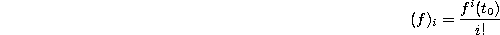
where 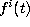 is the ith derivative of f at . The Taylor expansion of f(t) around can be conveniently expressed as
Let 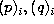 be the ith Taylor coefficients of p, q at . The Taylor coefficients for 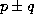 , pq and p/q can be obtained recursively using the following rules.
To compute the Taylor coefficients for (1), one first decomposes the right hand side of the differential equation into a series of simple expressions by introducing new variables, such that each expression involves only one arithmetic operation. These expressions are commonly called code lists. One then uses the recursive relations (5) and the initial values to generate the Taylor coefficients for all the the variables.
For example, the Van der Pol equation (3) can be decomposed as
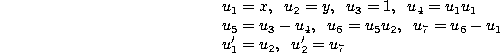
Using the initial value 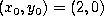 , the Taylor coefficients of all 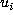 s can be easily generated using (5).
The Taylor coefficients for elementary functions can also be generated recursively. Some of the rules are:
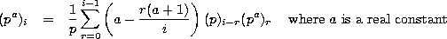
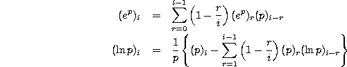
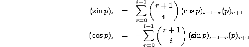
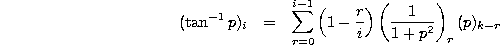